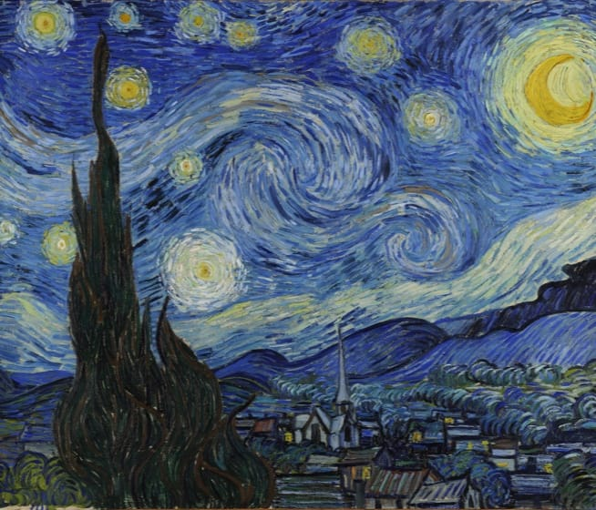
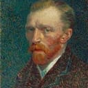

Starry Night
Vincent Van Gogh

Although The Starry Night was painted during the day in Van Gogh's ground-floor studio, it would be inaccurate to state that the picture was painted from memory. The view has been identified as the one from his bedroom window, facing east, a view which Van Gogh painted variations of no fewer than twenty-one times, including The Starry Night. "Through the iron-barred window," he wrote to his brother, Theo, around 23 May 1889, "I can see an enclosed square of wheat ... above which, in the morning, I watch the sun rise in all its glory."
Go to sourceStarry Night
Vincent Van Gogh